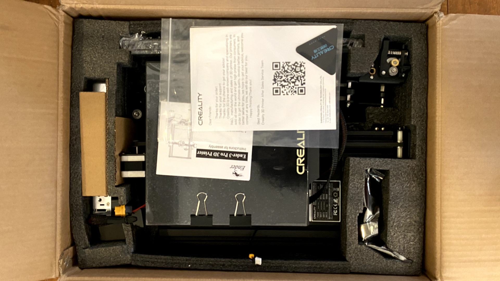
I followed the steps in the instruction manual that came inside the box to assemble the printer. For steps where I needed a little more clarification and/or verification, I watched the video of the unboxing and set up process.
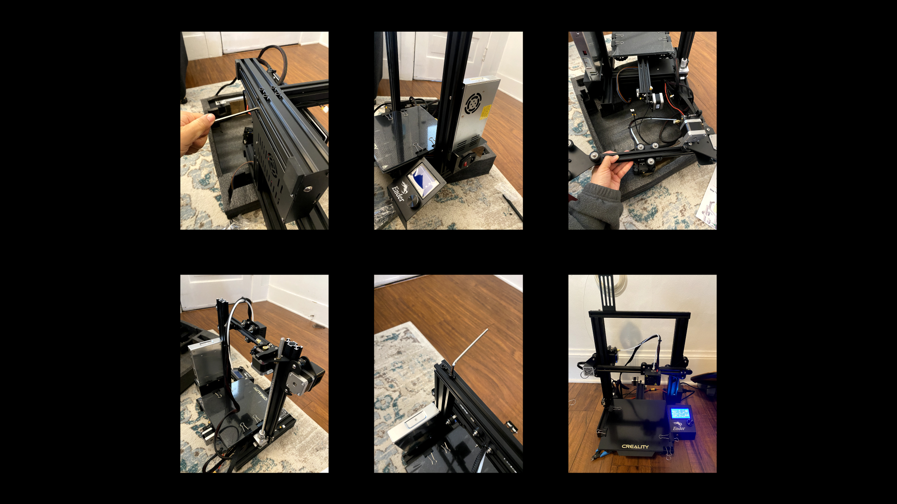
1. I screwed in the vertical channels to the base.
2. I screwed in the power supply and set the voltage to 115V. I then screwed in the display control.
3. Next, I screwed in the z-axis switch.
4. I installed the z-moter next and secured the T-rod.
5. I installed the bowden tube feeder to the horizontal channel.
6. To the same channel, I attached the hotend and the bracket.
7. To the same channel, I attached the hotend and the bracket. I adjusted the extruder's eccentric nuts to tighten its placement.
8. I added the adjuster to the end of that channel and then wrapped the belt around the whole bar, securing the ends in the thin slots at the bottom of the bar.
9. I then put the whole assembly onto the vertical rails, and then secured the last horizontal channel to the top of the rails. An end cap was attached to each side.
10. Attaching the spool holder is next. I got it as close to possible toward the left edge near the extruder. I had trouble screwing this down because the T nuts wouldn't turn inside the channel.
11. Lastly, I attached all the remaining cords, tube, cables, and limit switches. I then made sure all the screws holding this together were tight.
It took approximately 2 hours to complete the assembly.
This was a nightmarish task that took what felt like an eternity to get right. I conducted the bed leveling protocol from Filament Friday.
I downloaded the files onto the SD card and activated the bedlevel.gcode to start leveling the bed. I did this for several rounds with a piece of paper, adjusting the wheels at the bottom of the plate to incrementally lower or increase the height of the bed.
It took me a while to figure out how all the wheels related to each other. Turning one seemed to also affect the other corners.
Ultimately, I had to readjust the height of the z-switch to a millimeter higher to increase the distance between the nozzle and the bed in the back corners.
After several tries, I successfully printed the bed leveling print.
Once the bed leveling protocol was complete, I started the process of printing my first set of cubes.
1. In Rhino, I created a 2cm cube using the "Box" command. Then I exported it as an STL file.
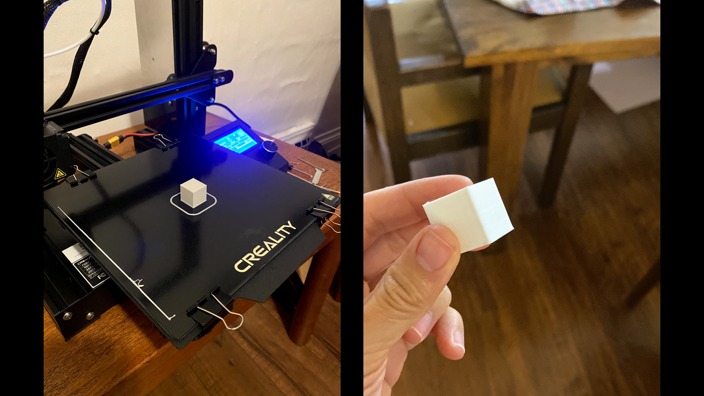2. I opened the file in Cura, and printed 3 cubes each at 3 different quality settings: Low, Standard, and Super.
Low quality: 20min
Standard quality: 26min
Super quality: 50min
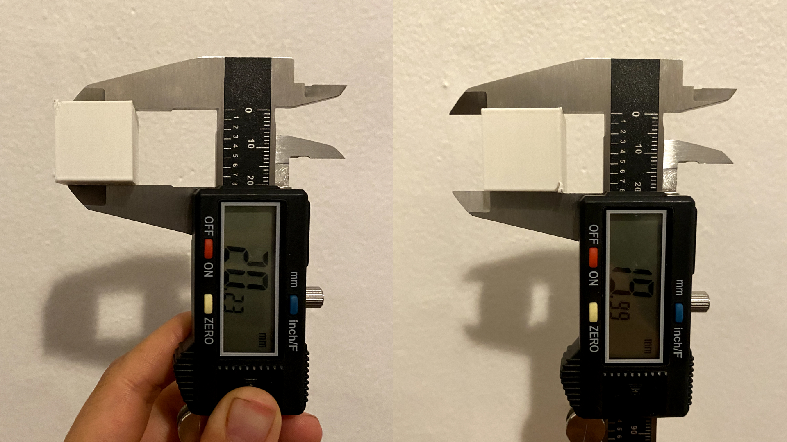3. After each print, I used my calipers to measure the width and height of each cube.
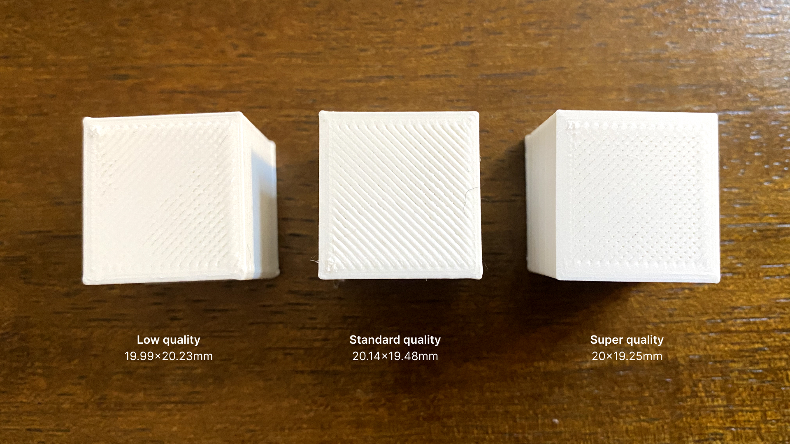All prints came within a 1mm tolerance!
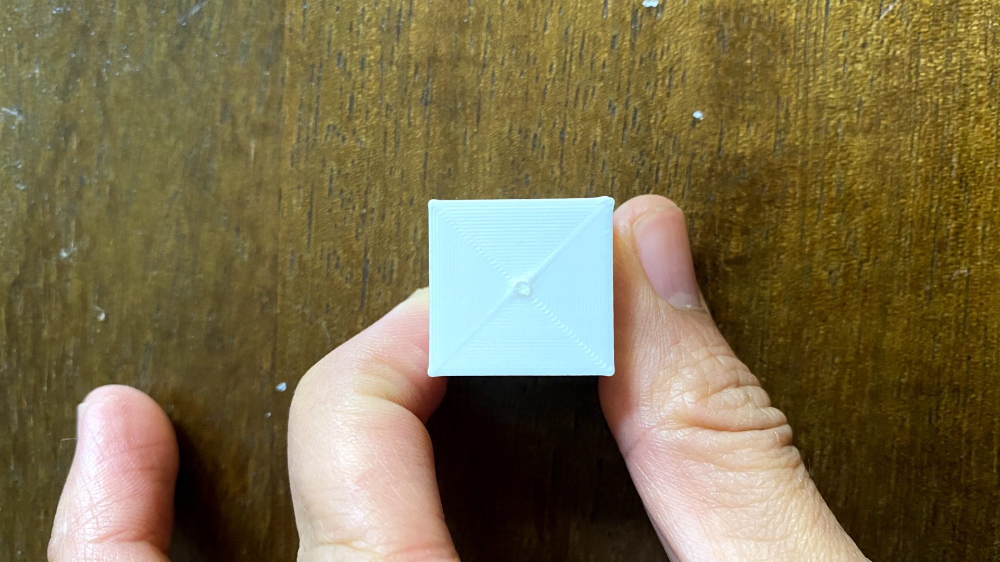I printed another cube with a concentric top and bottom layer at low quality setting. The outside to center printing creates a nice-looking pattern. The measurement for this cube is 19.37x20.20mm.
I used the "Tube" command in Rhino to create two tubes that are 3cm in height and diameter (1.5cm radius). To create the tube with the single extrusion wall thickness, I set the thickness to .4mm (since the thickness of a wall line count of 2 in Cura is .8mm). 0.8mm was the thickness of the wall of the second tube.
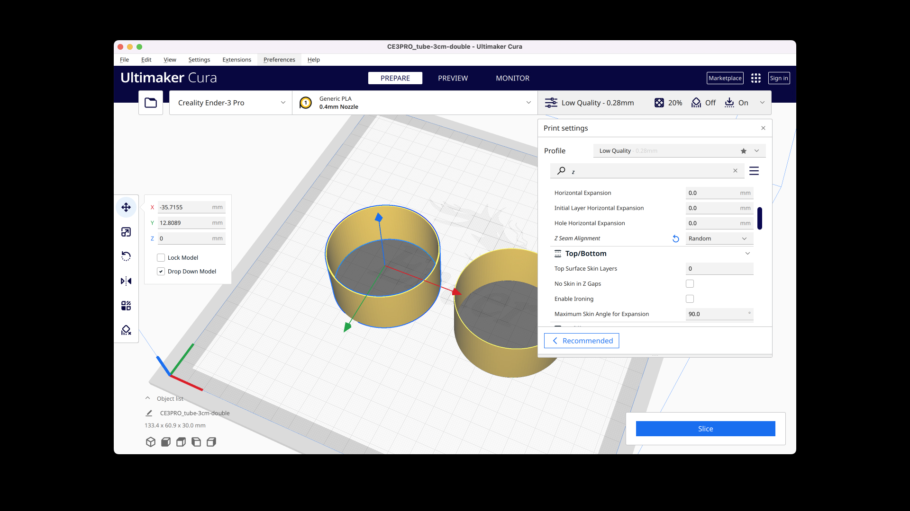I opened them in Cura and printed each one at a time since the cylinder with the double wall extrusion had an additional print setting: random z-alignment.
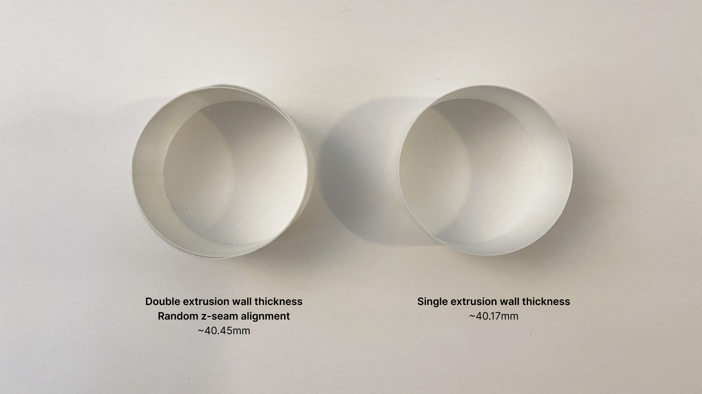The double wall extrusion print unfortunately wasn't very consistent around its perimeter.
The prints took about 32 min each.
I used the "cylinder" command in Rhino to create two cylinders with 3cm diameter. One I exported with a 0.1mm tolerance, and the other I exported as an stl file with a 0.001mm tolerance.
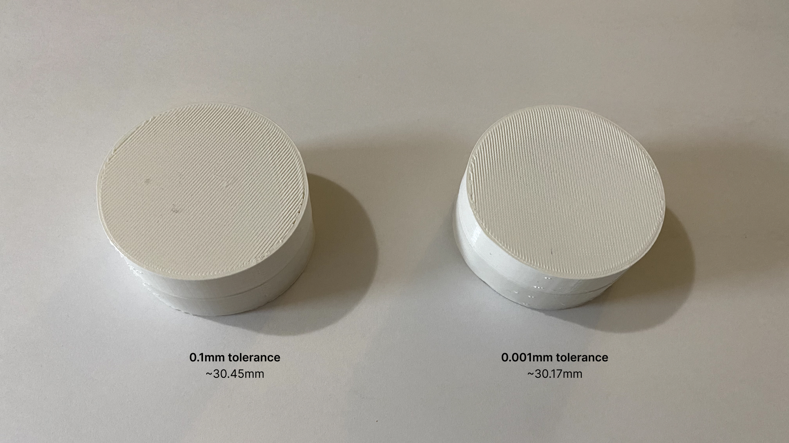In an effort to save time, I printed them both together since they shared the same print settings in cura. The measurement wasn't perfectly consistent all around and the difference between the two wasn't too noticeable.
The prints took about 4 h 23 minutes. For the 0.001 tolerance, the measurement ranged from 60mm to 60.34mm. For the 0.1mm tolerance, the measurement ranged from 29.39mm to 30.58mm.
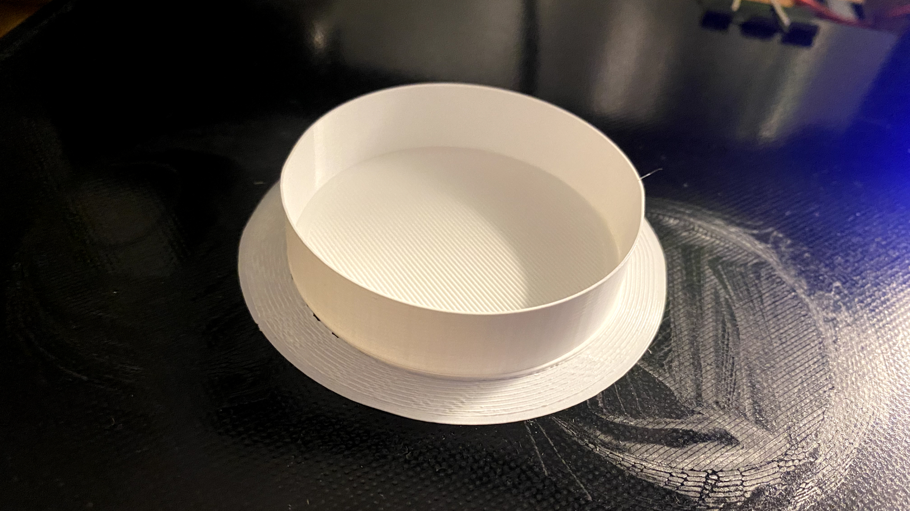Changing the special mode setting to "spiralize outer contour" transformed a solid object to a single walled print with a solid bottom.
This print took about 34 min. It wasn't perfectly symmetrical. The measurement ranged from 58.48mm to 60.64mm.
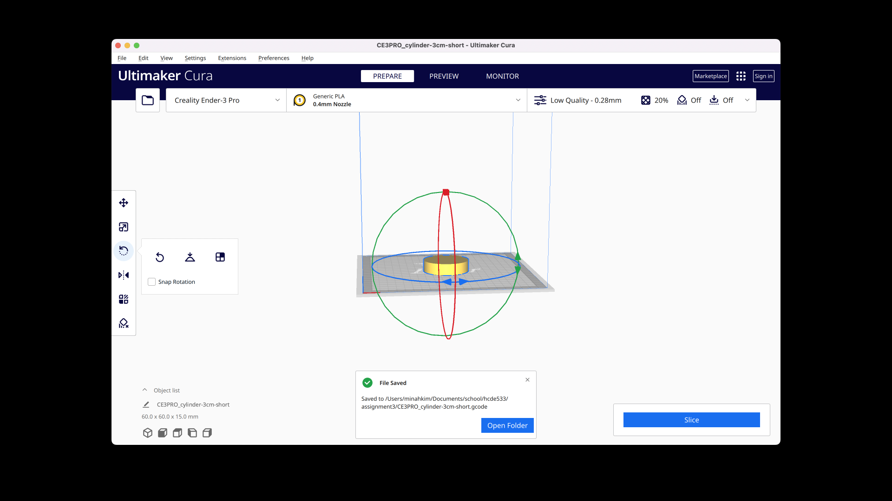For the cylinder to be printed on its side, I used the rotate tool in Cura to rotate it 90 degrees.
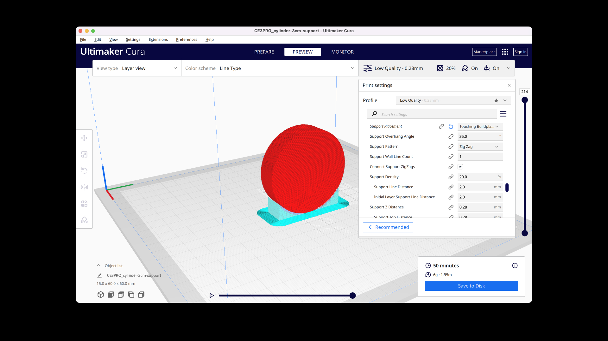I then checked "Generate support" in the settings. The only override I made to the default support settings was changing the support placement from "everywhere" to "touching buildplate" for the sake of ease and simplicity.
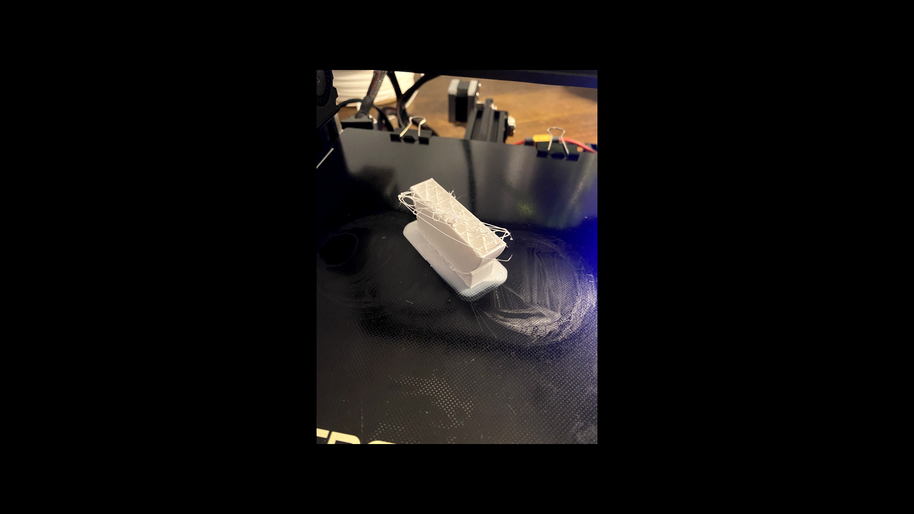It took me two tries. The first one failed in the middle because there was a kink in my PLA thread.
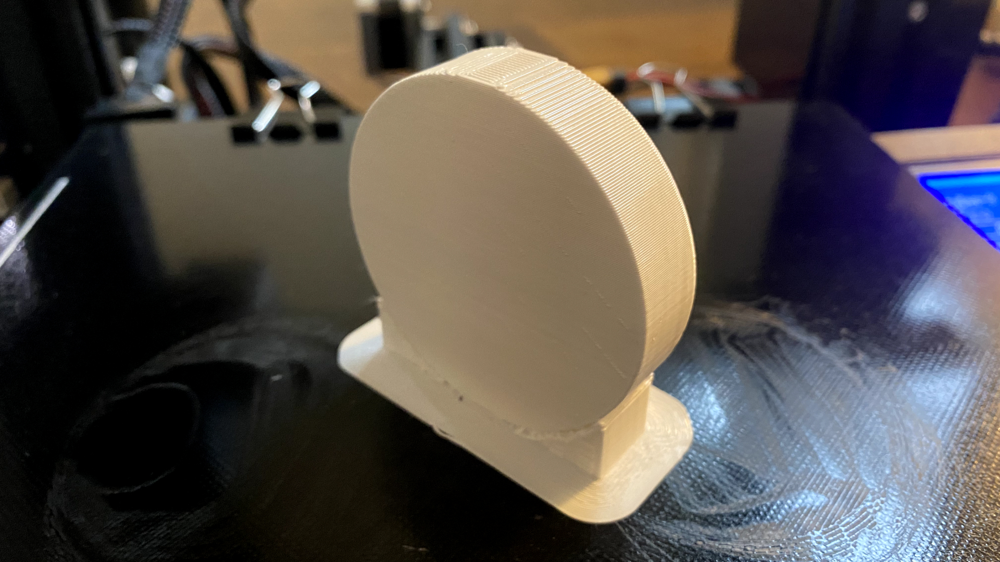It worked! The measurement was approximately 60.39mm.
I used the "Polygon" command to create an octagon with a 3cm diameter. I created two more octagons, each was 1cm smaller in size than the other and placed them both inside the larger octagon.
I used "OffsetSrf" command to increase the thickness of the wall of each polygon. I then used "MergeAllCoplanarFaces" to simplify the shape.
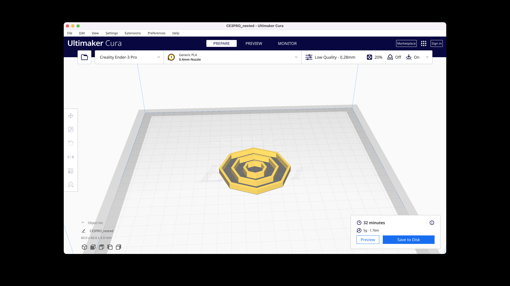It took about 32 minutes to print the object. I used "Brim" for the build plate adhesion to make it easier for me to take the shape off the plate.
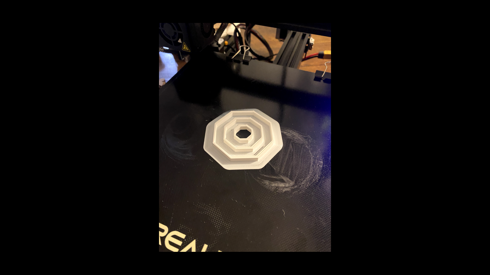Printed!
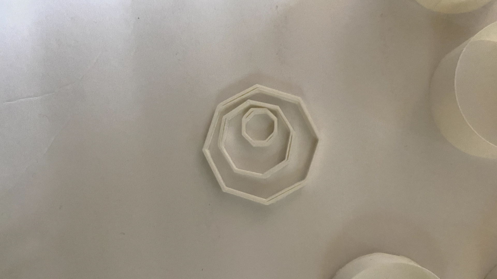The lines of the border split in certain parts so it wasn't a perfect print.
Big thanks to our TA Junchao for his patience during Office Hours. Huge thanks to my partner, Mike, for helping me troubleshoot the bed leveling protocol. Shout out to Mike's friend, Thomas, who taught me "OffsetSrf" and "MergeAllCoplanarFaces" Rhino commands for my nested object.